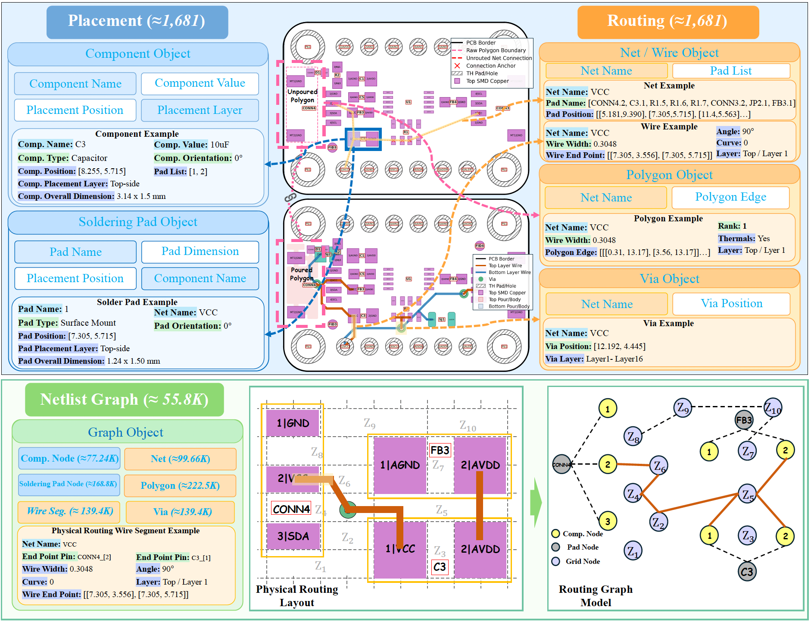

Topological path planning
Construct complete routing topologies that connect circuit nets.
PCB routing reasoning benchmark
Anonymous submission · Under review
1,681 industrial-grade, schematic-coupled PCB designs for evaluating connectivity, design-rule compliance, electrical functionality, and tool-augmented agentic routing.
Agentic evaluation
Select a setup to compare each model’s iterative routing process. Empty cards and leaderboard cells indicate results that are not yet available.
Paper results
Complete one-shot and agentic routing results from the current manuscript. Unavailable results are preserved as dashes, matching the paper.
Pass Rate is the fraction of expected inputs producing a loadable output. NR measures required nets that are connected and free of published design-rule violations; PR measures independent DRC-clean pad-to-pad connections. Missing outputs remain in the denominators. Higher is better for NR, PR, and Pass Rate; lower is better for violations, length, vias, and runtime.
| Model | Size | Experiment | Routability | Connectivity | Design Rules | Routing Quality | Efficiency | |||||||||
|---|---|---|---|---|---|---|---|---|---|---|---|---|---|---|---|---|
| NR | PR | Open (%) | PShort (%) | NShort (%) |
Total | Clr. | Dist. | Polygon (%) |
TWL | #Vias | #Layers | Pass Rate | RT | |||
Each model is evaluated across No Tools, Visualization, Routing Score, Semantic Input, Prerouting/Remake, and All Tools. Pass Rate uses 500 expected inputs. Avg. Steps is the mean number of recorded agent iterations. Higher is better for NR, PR, and Pass Rate; lower is better otherwise.
| Model | Size | Agent Configuration | Routability | Connectivity | Design Rules | Routing Quality | Efficiency | ||||||||||
|---|---|---|---|---|---|---|---|---|---|---|---|---|---|---|---|---|---|
| NR | PR | Open (%) | PShort (%) | NShort (%) |
Total | Clr. | Dist. | Polygon (%) |
TWL | #Vias | #Layers | Pass Rate | RT | Avg. Steps |
|||
Open, physical-short, and logical-short percentages count each affected net once. Polygon is not a violation. A dash indicates an unavailable result in the manuscript.
About the benchmark

Recent large language models have made progress in constraint-aware navigation and spatial reasoning, but reliable PCB routing additionally demands strict geometric, topological, electrical, and manufacturing constraints. OmniRouting introduces the first large-scale benchmark for this setting, pairing real-world board designs with engineer-verified reference routings and structured evaluation protocols. Current models continue to show weak path planning, poor design-rule adherence, and inconsistent preservation of electrical functionality.
Construct complete routing topologies that connect circuit nets.
Respect clearance, trace-width, via, obstacle, and boundary constraints.
Preserve schematic intent and reference routing behavior.
Iteratively refine routes with visualization, scoring, and semantic feedback.